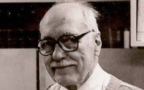

Michael Ventris Letters
Letters about the decipherment of Linear B
Home
Corrispondenti
Corrispondenti
Luoghi
Date
Testi
Michael Ventris
Attività: filologo e architetto
Controllo di autorità:
Ventris, Michael, 1922-1956
Tutti i metadati

Emmett L. Bennett
Attività: filologo
Controllo di autorità:
Bennett, Emmett L.(Emmett Leslie), 1918-2011
Tutti i metadati